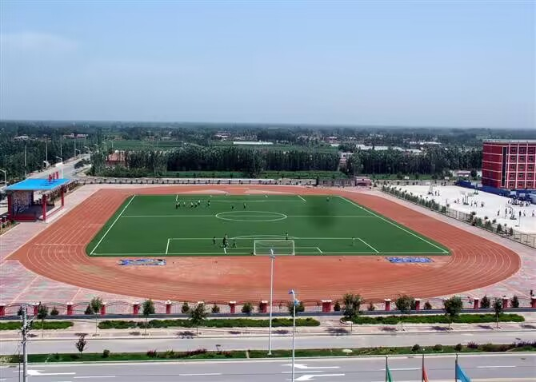
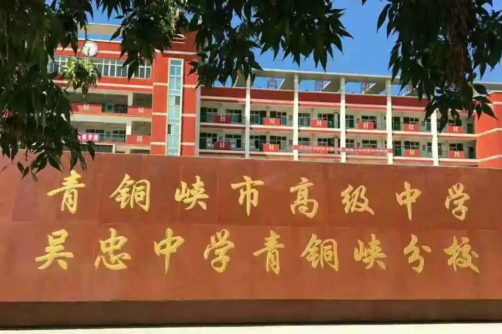

|
学校简介
青铜峡市高级中学创办于2005年8月，是青铜峡市委、政府整和优化教育资源，加快基础教育发展而实施的一项“民心工程”，。2019年7月15日学校正式更名为吴忠中学青铜峡市分校。
办学设施· 学校现占地面积106亩，建筑面积3.05万平方米，拥有两座教学楼、一座办公实验综合楼、两座学生宿舍楼、一座师生餐厅楼、一座图文中心楼、篮球运动场、排球场和标准化400米塑料跑道运动场等一流的基础设施。学校配有多个计算机教室、1个录播教室；所有教室已改造成多媒体教室，按一流标准配置了4个化学实验室、4个物理实验室、2个生物实验室、1个历史实验室、1个地理实验室及美术教室、音乐教室、琴房、形体训练室等一流的办学设施，优越的办学条件使高级中学成为青铜峡市规模最大的高中学校。 办学理念· 育人途径以严格的要求规范学生，以优良的学风影响学生，以高尚的师德感染学生，以精湛的教学启迪学生，以扎实的课程发展学生，以丰富的活动提高学生，以现代的观念武装学生，以优美的环境陶冶学生。

办学目的以科学发展观引领学校工作，以创建自治区级示范高中总揽学校发展全局，加快“霍里学校，和谐校园，精神家园”建设步伐，实现内涵发展和跨越式发展，着力提高教育质量，把学校建成“教育思想先进，管理机制科学，师资队伍优良，教育技术现代，学生培养优质，教学特色鲜明，校园环境优美”的现代化塞上名校。 师资力量. 学校坚持“以德立校，以法治校；规范建校、民主理校；质量兴校，科研强校；志从高远，争创一流”的办学思想。确定了“为学生终身发展负责，为民族美好未来奠基”的办学宗旨。按照“政策公开、编制公开、岗位公开、条件公开、程序公开、择优聘任”的原则，面向社会选拔了一支学科配套的师资队伍。现有教职工135名，专任教师102名，均为本科学历。其中，全国模范教师1名；高级教师25名，中级教师43名；自治区骨干教师6名，吴忠市级骨干教师6名，市级骨干教师6名。学校在管理上实行了校长负责制，全员聘用制和结构工资制，在人事分配制度上进行了重大改革。 办学成绩. 青铜峡市高级中学始终坚持“质量兴校、科研强校”的办学理念，在教育教学、教育研究、德育建设、文化建设、绿化环境、精神文明建设等方面都取得了优异的成绩。2006年高考一档上线人数158名，名列全市第一。力争实现“教育思想先进，管理机制科学，师资队伍优良，教育技术现代，学生培养优质，教学特色鲜明，校园环境优美，市内一流，区外接轨”的塞上名校的发展目标。学校2009年被评为第二批自治区示范高中。连续多年高考升学率稳居全市第一。

地图信息· 学校现占地面积106亩，建筑面积3.05万平方米，拥有两座教学楼、一座办公实验综合楼、两座学生宿舍楼、一座师生餐厅楼、一座图文中心楼、篮球运动场、排球场和标准化400米塑料跑道运动场等一流的基础设施。学校配有多个计算机教室、1个录播教室；所有教室已改造成多媒体教室，按一流标准配置了4个化学实验室、4个物理实验室、2个生物实验室、1个历史实验室、1个地理实验室及美术教室、音乐教室、琴房、形体训练室等一流的办学设施，优越的办学条件使高级中学成为青铜峡市规模最大的高中学校。 |


<
>